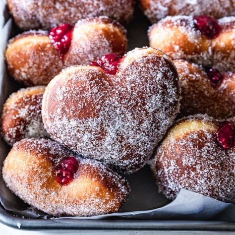

Raspberry Jelly Heart-Shaped Doughnuts

Description
Homemade Raspberry Jelly Heart Shaped Doughnuts for Valentine’s breakfast! They’re super soft and tender but still with a chewy bite thanks to both all-purpose and bread flour.
Ingredients
Doughnuts
- 2 ½ cups of unbleached all-purpose flour
- 1 ½ cups of unbleached bread flour
- ½ cup of water
- 8 tablespoons of butter, melted and cooled down
- ¾ cup of buttermilk, at room temperature
- 1 ½ teaspoons of fine sea salt
- 2 large eggs
- ½ cup of natural granulated sugar
- 1 packet of instant yeast
- ½ teaspoon of vanilla extract
- Neutral oil for frying (canola, grape seed or vegetable)
Raspberry Jelly
- 3 cups of raspberries, fresh or frozen
- ¾ cup of raw sugar
- ½ lemon juice
- 2 tablespoons of unbleached flour
Steps
Make the dough
-
In a large bowl mix the all purpose flour with the bread flour
-
Mix the water with 3 tablespoons of the flour mixture in a small bowl or measuring cup
-
Heat in the microwave until you have a smooth pudding-like paste. Start with two 15-second intervals and keep heating in 10-second intervals if necessary to prevent scorching the mixture.
-
Place in the fridge or in a dry cool place to refresh.
-
With a paper towel oil with vegetable oil the inside of a large bowl.
-
In a mixing bowl pour the melted butter, the buttermilk and mix the fine sea salt.
-
Add the eggs, the sugar, the instant yeast, the vanilla extract and the cooled down mixture. Mix using the whisk attachment.
-
Pour 3 cups of the flour and mix until combined.
-
Switch to the hook attachment and add the remaining flour. Knead in medium-slow speed for 10 minutes. Dough should not stick to the walls but it will stick to the bottom.
-
Transfer to oiled bowl. Cover with plastic wrap and loosely wrap bowl with a puffy kitchen towel or throw blanket.
-
Place in a warm area of your home where there is no air draft. Let the dough rise and double in size, about 1 ½ to 2 hours.
-
When the dough is ready, dust with enough flour a clean flat surface.
-
Punch the dough (it will deflate) and turn it out over the surface.
-
Dust flour over your rolling pin and over the dough, making sure the corners and all dough areas do not feel tacky.
-
Using your hands (you may rub some flour on them as well) stretch the dough until it’s a bit more of ¼ inch thick.
-
Using a heart shaped cookie cutter cut as many doughnuts as you can. Make sure the dough is well cut by separating the area around the cutter or shaking the cutter slightly so they retain their shape.
-
Transfer each doughnut to a baking sheet or large tray lined with parchment paper.
-
Cover with another parchment or smooth piece of cloth and let them rise again for 45 minutes to an hour.
Fry and assemble
-
Fill a deep pot or skillet pan more than half with oil.
-
Heat it over medium high heat until a thermometer marks 350°, oil will start to have ripples and will start to look thinner.
-
Optional: While oil is heating, cut the parchment paper below each doughnut. You are going to drop the doughnut with the paper so you don’t touch it.
-
Drop one or two doughnuts at a time. Remove parchment paper with kitchen thongs. Let the doughnuts fry until deep golden brown, about three minutes. Using a large slotted spoon or spider strainer turn the doughnut and cook the other side. Remove from oil and place them over paper towel.
-
Repeat with the rest of the doughnuts. If at some point the oil gets too hot and it’s burning the doughnuts without cooking them completely, turn heat to medium for a few minutes and keep frying. Increase and decrease temperature again if needed.
-
While doughnuts are frying, coat with plenty of sugar the ones that already have lost some of the heat and that you can handle. Place them in a cooling rack so the sugar won't get moist with their steam.
-
As soon as they are cooled down, fill them with your favorite filling (raspberry filling recipe below).
Make the raspberry filling
-
In a small saucepan combine all the ingredients except for the flour and bring to a gentle boil over medium heat.
-
Cook for about 10 minutes.
-
After that, sprinkle the flour and move frequently.
-
Keep cooking until you achieve a thick consistency, 2 to 3 minutes more.
-
Remove from heat and keep moving for 30 seconds more.
-
Let it cool completely or chilled in the fridge before filling the doughnuts.